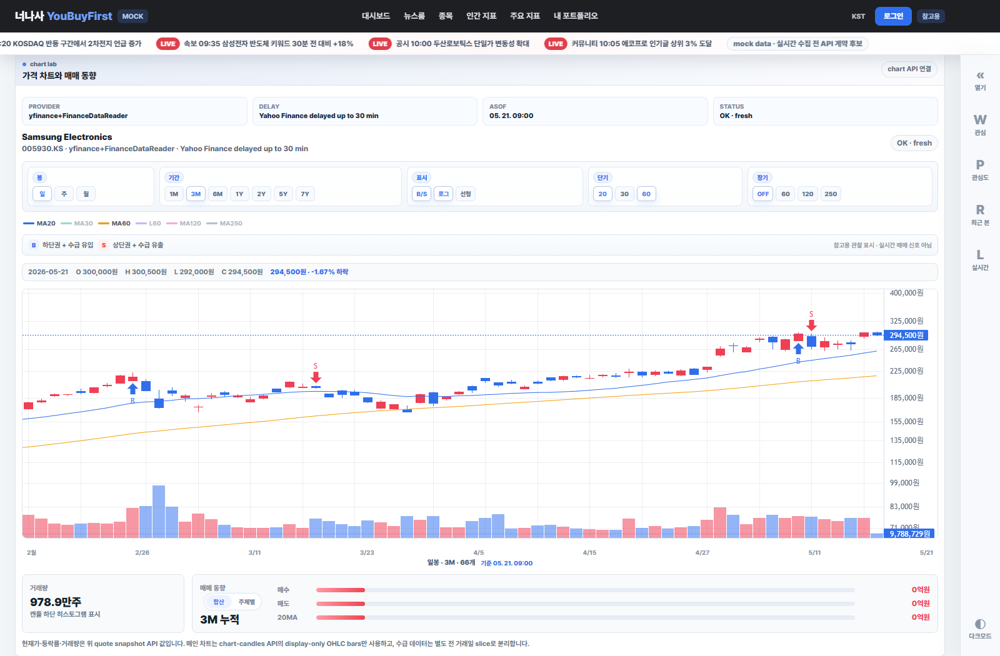
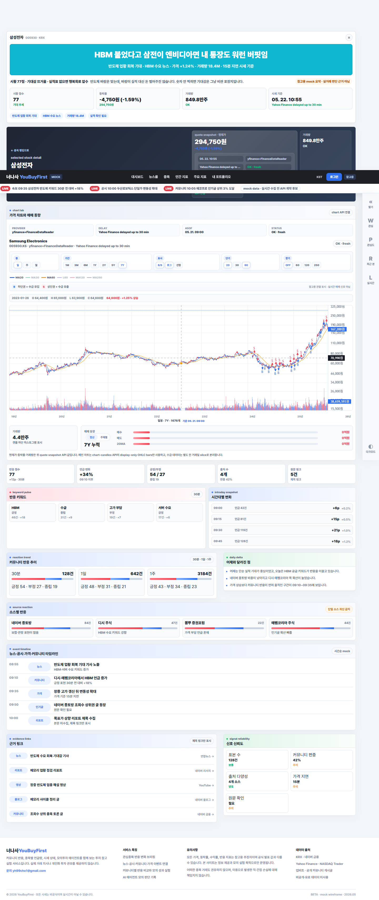
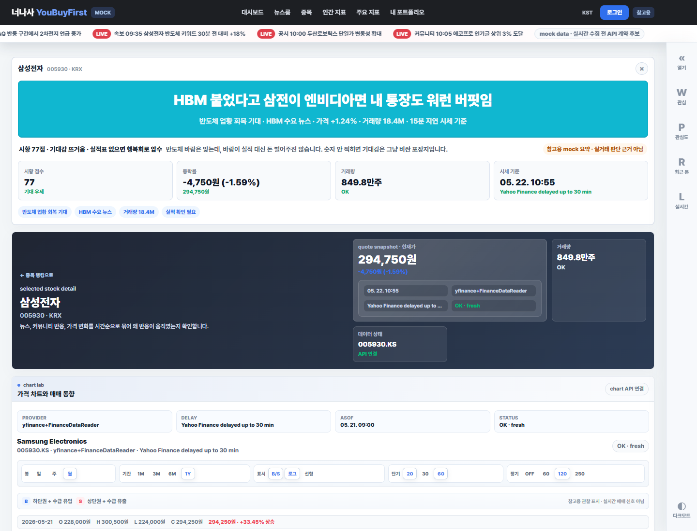
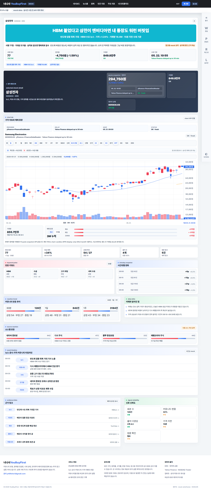

종목 상세 전 거래일 수급 API 연결
Playwright full page · 1600px · stocks/005930가격은 quote snapshot, 차트는 chart-candles, 수급은 investor-flows API로 분리 호출합니다. 국내 종목은 개인/외국인/기관 전 거래일 순매수·순매도 관찰값을 보여주고, 해외 종목은 수급 영역을 숨깁니다.
최신 main의 quote snapshot, chart-candles, investor-flows API를 front 브랜치에 반영한 종목 상세 대표 캡처입니다.
가격은 quote snapshot, 차트는 chart-candles, 수급은 investor-flows API로 분리 호출합니다. 국내 종목은 개인/외국인/기관 전 거래일 순매수·순매도 관찰값을 보여주고, 해외 종목은 수급 영역을 숨깁니다.
기간 버튼은 1M/3M/6M/1Y/3Y/5Y로 정리했고, 단기 이평은 5/10/20, 장기 이평은 60/120/200으로 중복 60일선을 제거했습니다. 3M 차트는 캔들이 좌우 공백 없이 축에 맞게 펼쳐지는지 확인했습니다.

선택 기간의 캔들 수와 차트 폭으로 bar spacing을 다시 계산해, 3M 캔들이 왼쪽에 몰리고 오른쪽이 빈 미래 구간처럼 남던 문제를 줄인 버전입니다.

`/api/market/chart-candles?range=7Y`가 1,764개 bars를 내려주는 상태에서 7Y 버튼, 연도 축, 월/일 축 전환, MA20/30/60/120/250 색상 범례를 확인한 버전입니다.

차트는 1Y bars를 받아 기본 화면만 3M으로 제한하고, 이평선은 전체 bars 기준으로 계산합니다. 기능 버튼은 봉, 기간, 표시, 단기/장기 이평 그룹으로 나눴고, 축 요약은 화면 범위에 맞춰 년/월/일을 구분합니다.

`/api/quotes`는 현재가, 등락률, 거래량 snapshot으로만 쓰고, `/api/market/chart-candles`의 bars가 유효할 때만 메인 차트를 렌더링한 버전입니다. 차트 영역에는 provider, delayLabel, asOf, stale/dataStatus를 함께 표시합니다.
{kind=link}
{kind=link}
{kind=link}
{kind=link}
{kind=link}
{kind=link}
{kind=link}